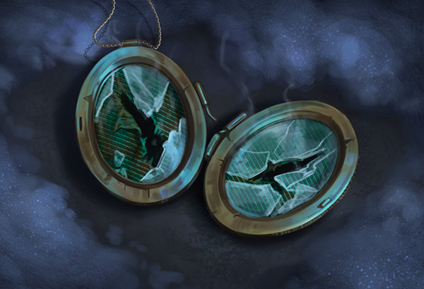
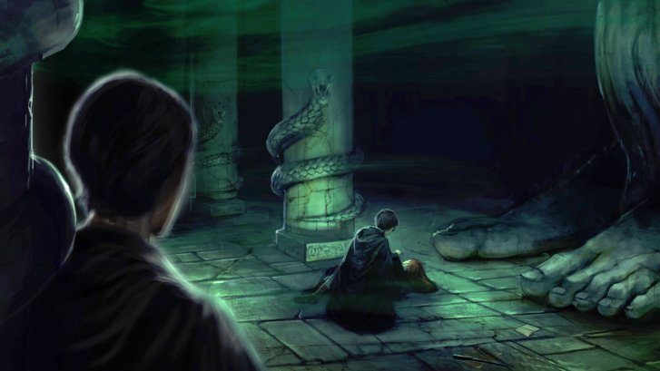

Everyone you didn’t realise was connected to Voldemort’s Horcruxes
The histories of Voldemort’s Horcruxes are long and complex, intertwining with many lives along the way…

Riddle’s diary
The diary dates back to when Voldemort was still Tom Marvolo Riddle. After opening the Chamber of Secrets, he used the Basilisk to kill Myrtle Warren, providing the murder necessary to craft a Horcrux.
Voldemort entrusted his diary to Lucius Malfoy, who later seized the opportunity to smuggle it back into Hogwarts. Malfoy slipped the book to Ginny Weasley, who poured her heart and soul into its pages. Riddle’s spirit possessed Ginny and used her to reopen the Chamber, freeing Slytherin’s Basilisk to Petrify Argus Filch’s cat, Colin Creevey, Justin Finch-Fletchley, Nearly Headless Nick, Penelope Clearwater and Hermione Granger.
When a terrified Ginny attempted to dispose of the diary, it fell into the hands of Riddle’s future nemesis Harry Potter. Harry destroyed the diary with a Basilisk fang then used its remains to trick Lucius Malfoy into freeing Dobby.
The diary showed preserved memories, like a Pensieve, which included former Hogwarts headmaster Armando Dippet, a teenage Rubeus Hagrid, the infant Acromantula Aragog and a young(ish) Professor Albus Dumbledore. Another link to the past was Riddle’s victim Myrtle Warren, who never left Hogwarts and now lives her afterlife as Moaning Myrtle.
Harry crouches over Ginny in the Chamber of Secrets while Tom Riddle watches.
Gaunt’s ring
This Horcrux was intrinsically tied to Voldemort’s family. His father was its murder victim while his mother’s side provided the curious heirloom.
Riddle left Mrs Cole’s orphanage to attend Hogwarts, yet this new magical life could not end the resentment he harboured towards his parents. As a teenager, Voldemort travelled to his mother’s former home and met his uncle, Morfin Gaunt, who was wearing the family ring. The ring already had a remarkable history as it contained the Resurrection Stone, owned by Cadmus Peverell and immortalised in ‘The Tale of the Three Brothers’. Ironically this fable warns of the folly in trying to cheat death and Voldemort used Horcruxes to do exactly that.

On learning his father’s location Voldemort murdered Tom Riddle Sr, as well as his own grandparents for good measure. Morfin was left with a false memory that caused him to confess to murders he didn’t commit, and a stint in Azkaban for his troubles. In the Muggle world the Riddles’ gardener Frank Bryce was suspected. The ring went missing, but a Pensieve memory showed Voldemort wearing it while questioning Horace Slughorn about multiple Horcruxes.
The ring was eventually destroyed by Albus Dumbledore, but that came at a price. Recognising the stone and tempted to see his parents and sister again, Dumbledore fell victim to a powerful curse that was partially contained by Severus Snape. The stone, now defunct as a Horcrux, was placed inside a Snitch and passed to Harry by Rufus Scrimgeour. It was last used to recall Lily and James Potter, Sirius Black and Remus Lupin as Harry prepared to face death.
Retourner à l'acceuil